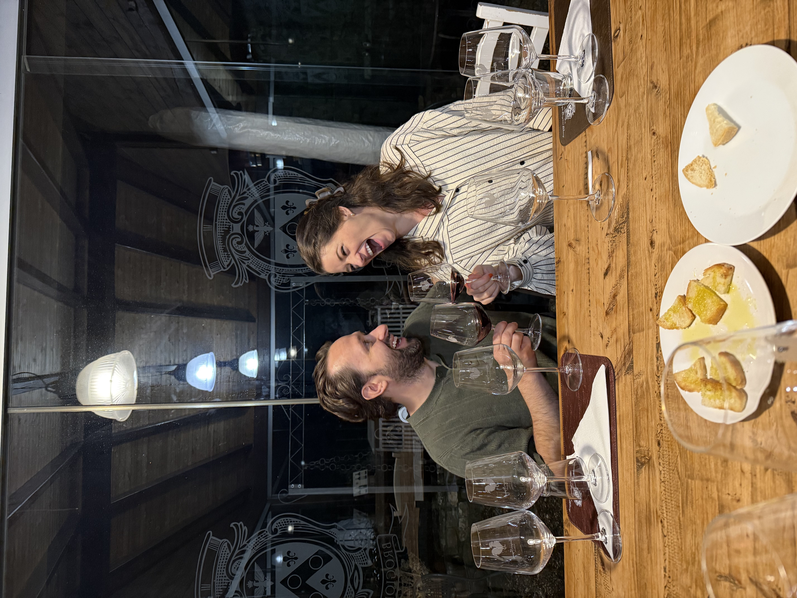

About Me
Where Science Meets Purpose
I'm a Physician Assistant with over a decade of clinical experience spanning hospital medicine and a purposeful transition into industry Medical Affairs. That bedside background isn't something I left behind — it's the lens through which I read data, engage with KOLs, and understand what clinical evidence truly means for patients. My wife is also a PA, which means science, medicine, and a healthy dose of evidence-based debate are very much part of our dinner table.
Clinical Foundation
10+ years as a PA-C in hospital medicine and medical affairs
Family First
Married to a PA — two kids, two bulldogs, one full house
Avid Traveler
Most recently roaming the vineyards of Tuscany with my best friend
PA → MSL
Clinical insight informing scientific exchange and medical communication